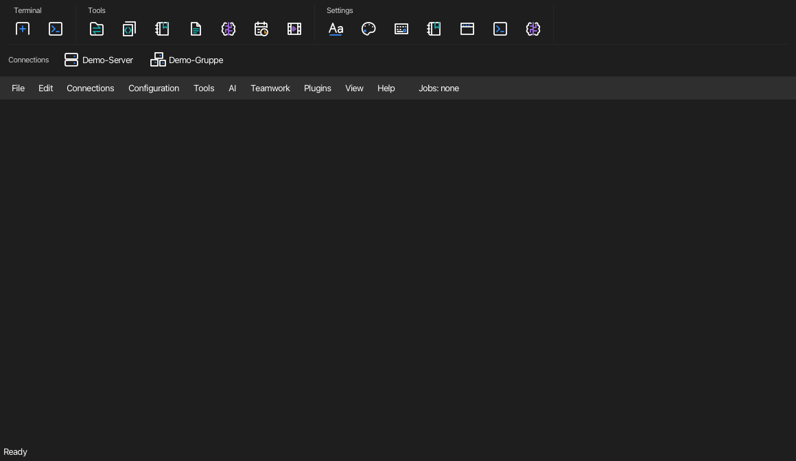
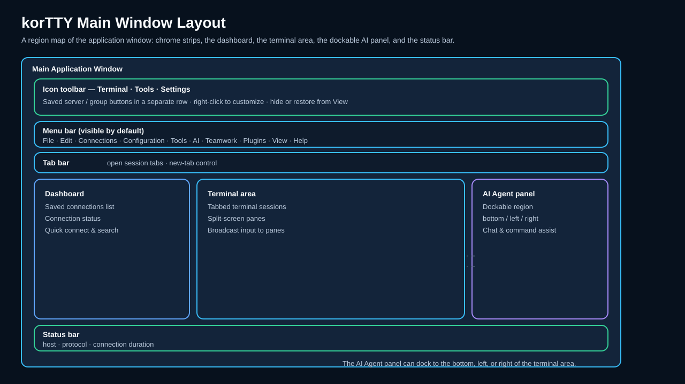
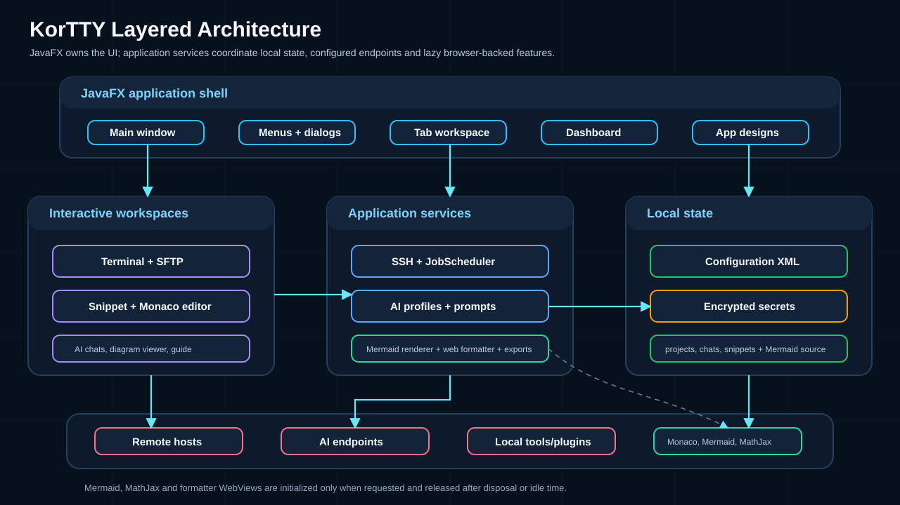
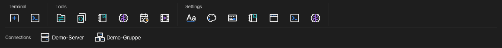
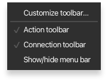
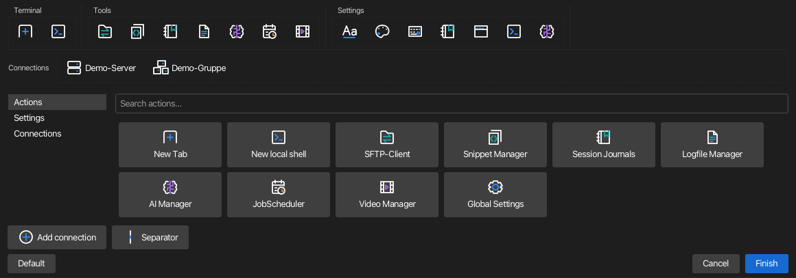

Übersicht des Hauptfensters¶


Ein neues korTTY-Fenster: die anpassbare Symbolleistenleiste, der Terminalbereich (wo Sitzungs-Tabblätter und optional das Dashboard erscheinen, sobald Sie sich verbinden) sowie die Statusleiste. Das folgende Diagramm zeigt dieselben Bereiche:

Das Hauptfenster von korTTY hat diese Bereiche:
- Symbolleiste — direkte Aktionen gruppiert in Terminal, Tools und Einstellungen über der Menüleiste, mit einer separaten Zeile für Ihre gespeicherten Server- und Gruppenschaltflächen. Siehe Anpassung der Symbolleiste.
- Menüleiste — standardmäßig in jedem neuen Fenster sichtbar. Klicken Sie mit der rechten Maustaste auf eine der Zeilen der Symbolleiste und wählen Sie Menüleiste ein/ausblenden, um sie für dieses Fenster anzuzeigen oder zu verbergen; das Kontrollkästchen zeigt den aktuellen Status wider. Sie können auch Ctrl+Shift+L (Cmd+Shift+L auf macOS) verwenden. Die Sichtbarkeit ist eine Sitzungseinstellung und wird nicht gespeichert. Die Systemmenüleiste von macOS bleibt verfügbar. Die im Fenster angezeigten Menüs sind Datei · Bearbeiten · Verbindungen · Konfiguration · Werkzeuge · KI · Teamarbeit · Plugins · Ansicht · Hilfe. Alle Funktionen sind hier erreichbar und über Tastenkürzel, sowie über die Befehlsleiste (Ctrl+Shift+P, Cmd+Shift+P auf macOS) verfügbar, die jedes Menübefehl durch seinen Namen findet und ausführt, auch wenn die Menüleiste ausgeblendet ist. Dabei werden auch Befehle der rechten Maustaste im Terminal wie Puffer löschen ausgeführt, der Benutzer kann in einen der offenen Tabs wechseln, wobei die letzten genutzten Tabs zuerst angezeigt werden, eine Verbindung zu einer gespeicherten Verbindung hergestellt und ein beliebiges Snippet im Terminal ausgeführt werden. Nachdem ein geplanter Eintrag aktiv ist, erscheint ein dynamisches Menü mit dem Status des JobScheduler direkt nach Hilfe. Während ein Anleitungsübersetzung ausgeführt wird, bleibt ein Fortschrittsindikator (Stab, Prozent und verbleibende Zeit) am rechten Ende der Menüleistenspalte sichtbar, selbst wenn die Menüleiste selbst ausgeblendet ist.
- Tab-Leiste — jede SSH/Mosh-Sitzung läuft in ihrem eigenen Tab, benannt nach ihrer Verbindung, nach dem Titel, den ihre Shell setzt, oder nach einem Namen, den Sie dem Tab mit Tab umbenennen geben. Ctrl+T öffnet die Schnellverbindung für einen neuen Tab; Ctrl+Tab / Ctrl+Shift+Tab wechseln zwischen Tabs, in der Reihenfolge der Tab-Leiste oder, wenn Sie es in den Fenster-Einstellungen einschalten, in der Reihenfolge ihrer letzten Nutzung, und Ctrl+1 bis Ctrl+8 springen zum ersten bis achten Tab, Ctrl+9 zum letzten (Cmd auf macOS). Ein farbiger Punkt vor dem Titel eines Tabs und ein Rahmen in derselben Farbe um sein Terminal zeigen die Tab-Farbe seiner Verbindung oder der Umgebung seiner Anmeldeinformationen; der Rahmen lässt sich in den Fenster-Einstellungen ausschalten. Ein bernsteinfarbenes Fork-Symbol hinter dem Titel markiert einen Tab, dessen Eingabe an andere Bereiche geht, über Multi-Exec oder den Broadcast-Modus; sein Tooltip sagt, über welches von beiden. Mit aktivierter Option Tool-Fenster als Tabs öffnen (Fenster-Einstellungen) werden Verwaltungstools wie Snippets, der JobScheduler oder der KI-Manager ebenfalls als Tabs in dem Fenster geöffnet, dessen Menü Sie benutzt haben — anstatt separate Fenster zu öffnen. Der Snippet-Manager zeigt die von Ihnen bearbeiteten Snippets als eigene Tabs innerhalb seines eigenen Tabs.
- Dashboard (umschalten Ctrl+Shift+D) – ein Seitenbereich, der jede offene Verbindung mit Statuspunkten, Protokollabzeichen und KI-Agent-Abzeichen auflistet. Siehe Armaturenbrett unten.
- Dateibrowser (Ansicht → Dateibrowser ▸ Links anzeigen / Rechts anzeigen) – ein andockbarer lokaler Dateimanager mit Navigationssymbolleiste, Pfadleiste, Filter, Typsymbolen und einem Ordner-/Datei-/Auswahlzähler. Beim nächsten Start werden Seite, Breite, Status der versteckten Datei und letztes Verzeichnis wiederhergestellt. Siehe Dateibrowser.
- Live-Journal-Panel (Ansehen → Live-Journal, Ctrl+Alt+L) — das aktive Tab ist ausgeführt Sitzungsprotokoll wie seine volle Protokoll-Seite, angepflanzt und in Echtzeit aktualisiert; Seiten- und Breite werden beim nächsten Start wiederhergestellt.
- Coding-Agents Panel (Ansehen → Coding-Agents, Ctrl+Alt+G) — hängt an der linken oder rechten Seite des Terminalbereichs an und listet jeden Coding-Agents auf, der in einem beliebigen korTTY-Fenster erkannt wurde. Sie zeigt sich und versteckt sich bei Agentenerkennung, sofern Automatisch die Coding-Agents-Seitenleiste anzeigen und verbergen nicht deaktiviert ist, und behält ihre letzte Seite und Breite bei. Siehe Coding-Agents.
- Terminalbereich — das aktive Terminal, mit optionaler geteilten Ansicht und Broadcast-Eingabe.
- Statusleiste — Verbindungsstatus, Host/IP, aktives Protokoll, temporärer SSH-Schlüssel-Timer und Verbindungsdauer. Solange Bereiche an Multi-Exec teilnehmen, zählt ein bernsteinfarbener Chip in jedem Fenster sie samt den Tabs und Fenstern, in denen sie sich befinden, und sein Link Beenden beendet Multi-Exec überall.
Nur Terminal-Vollbild
Drücken Sie Ctrl+Shift+F (oder Ansicht → Nur Terminal-Vollbild), um das gesamte korTTY-Fenster – Menüs, Registerkarten und Statusleiste inklusive – in seiner vorherigen Fenstergröße und zentriert auf einem leeren Vollbildhintergrund anzuzeigen, sodass der Desktop und andere Fenster nicht mehr um Aufmerksamkeit konkurrieren. Ansicht → Terminal-Bildlaufleisten im Vollbildmodus ausblenden entfernt auch die Bildlaufleisten. Ein transparenter Terminalhintergrund wird undurchsichtig, während der Vollbildmodus aktiv ist, und kehrt beim Verlassen auf die gespeicherte Ebene zurück. Drücken Sie erneut Ctrl+Shift+F, um die Wiederherstellung durchzuführen.
Anpassung der Symbolleiste¶
Die Icon-Aktionsleiste ist standardmäßig sichtbar, auch wenn Sie eine Konfiguration aktualisieren, die noch keine Leisten-Einstellungen hat. Ihre ursprünglichen Vektor-Icons verwenden themenfarbige Konturen mit kleinen farbigen Details, sodass sie in hellen und dunklen Designs erkennbar bleiben. Ansicht → Icon-Aktionsleiste und Ansicht → Verbindungsleiste zeigen die beiden Reihen unabhängig voneinander an oder verbergen sie. Die gleichen Schalter und Menüleiste ein/ausblenden sind verfügbar, wenn Sie mit der rechten Maustaste auf eine der Reihen klicken. Wenn die Menüleiste ausgeblendet ist, klicken Sie mit der rechten Maustaste auf die Statusleiste, um eine der Leisten wiederherzustellen. Beide Sichtbarkeitseinstellungen und die Schaltflächenplatzierung werden über Fenster hinweg geteilt und bleiben auch nach Neustarts erhalten. Ältere Konfigurationen behalten ihre vorherige Sichtbarkeit für beide Reihen, bis Sie sie separat ändern.
Die erste Zeile gruppiert Neuer Tab und Neue lokale Shell unter Terminal; Connection-Manager, SFTP, Snippet-Manager, Sitzungsjournale, Logdatei-Manager, KI-Manager, JobScheduler und Videoverwaltung unter Werkzeuge; und Schriftart, Farben, Tastatur, Logs, Fenster, Terminal und KI-Tastenkürzel unter Einstellungen, in dieser Reihenfolge. Die Schaltfläche für globale Einstellungen ist im Anpassungskatalog verfügbar, aber nicht im Standardlayout enthalten. Neuer Tab öffnet die Schnellverbindung. Neue lokale Shell startet sofort einen Tab mit dem bestehenden Plattform-Standard-Shell-Präset. Die Hinweise nennen jede Aktion und den derzeitigen Tastenkürzel, falls vorhanden. Schaltflächen, die nicht passen, bleiben über die Toolbar-Überlaufmenü erreichbar. Die Größe der Toolbar-Icons (px) kann von 16 bis 64 in Globale Einstellungen → Fenster eingestellt werden; der Standardwert beträgt 24, und das Speichern aktualisiert sowohl die beiden Zeilen als auch den Anpassungskatalog in allen Fenstern.
Wenn zum ersten Mal eine ältere gespeicherte Toolbar-Layout geladen wird, fügt korTTY automatisch die Schaltfläche für den Logdatei-Manager nach den Sitzungsjournalen in Werkzeuge hinzu oder am Ende von Werkzeuge, falls Sitzungsjournale nicht vorhanden sind. Bestehende Schaltflächen, Trennungen, ihre Reihenfolge sowie die Sichtbarkeit der beiden Zeilen werden erhalten. Eine bereits platzierte Schaltfläche für den Logdatei-Manager bleibt an ihrem Platz, ohne eine doppelte zu erstellen. Nach dieser Migration wird die Entfernung der Schaltfläche durch Anpassung gespeichert. Auf dieselbe Weise wird die Schaltfläche für den Connection-Manager einmalig am Anfang von Werkzeuge hinzugefügt oder als neue Gruppe Werkzeuge am Ende, falls das Layout keine enthält; eine bereits platzierte Schaltfläche für den Connection-Manager bleibt an ihrem Platz, und eine spätere Entfernung wird ebenfalls gespeichert.


Rechtsklicken Sie die Symbolleiste und wählen Icon-Leiste anpassen…. Beide Zeilen erscheinen als bearbeitbare Ziele, einschließlich einer von Ihnen ausgeblendeten Zeile, und ein Katalog öffnet sich darunter, gefiltert nach dem Namen, den Sie in dessen Suchfeld eingeben, mit Platz für mindestens zwei vollständige Button-Zeilen, einschließlich umgebrochener Beschriftungen. Katalog-Buttons brechen bei Leerzeichen oder Bindestrichen um und vergrößern sich für Wörter, die sonst abgeschnitten würden. Das Beenden oder Abbrechen der Anpassung stellt jede Zeile auf ihre gespeicherte Sichtbarkeit zurück. Wählen Sie Aktionen, Einstellungen oder Verbindungen in seiner Kategorienliste. Klicken Sie einen Katalog-Button, um ihn seinem Standardbereich hinzuzufügen, oder ziehen Sie ihn an die gewünschte Position. Die Kategorie Einstellungen bietet einen Shortcut für jeden Haupt-Tab der Globalen Einstellungen. Verbindung hinzufügen öffnet die Kategorie Verbindungen, gefüllt aus dem Connection-Manager. Trenner fügt einen verschiebbaren Teiler hinzu.

Ziehen Sie einen vorhandenen Button, um ihn zu verschieben. Klicken oder rechtsklicken Sie darauf für Button entfernen, Nach links verschieben, Nach rechts verschieben und In Bereich verschieben. Mit einem bearbeitbaren Button fokussiert, bewegt Alt+Left / Alt+Right ihn und Del oder Backspace entfernt ihn. Aktionen können zwischen den drei Aufgabenbereichen verschoben werden; gespeicherte Server- und Gruppen-Buttons bleiben in der Verbindungszeile. In diesem Modus startet das Klicken eines Ziel-Buttons niemals seine Aktion oder eine Verbindung.
Fertig speichert das bearbeitete Layout. Abbrechen verwirft es. Standard stellt das Standardlayout in der Bearbeitungsvorschau wieder her, sodass es noch abgebrochen werden kann. Eine absichtlich leere Konfiguration bleibt leer und bietet Icon-Leiste anpassen…. Die Verbindungszeile ist bei leerem Zustand während der normalen Nutzung ausgeblendet und immer verfügbar, wenn Sie anpassen.
Server-Schaltflächen zeigen den gespeicherten Verbindungsnamen an und verbinden sich über den bestehenden Anmeldefluss. Gruppen-Schaltflächen zeigen den vollständigen Gruppenpfad an und öffnen nur deren direkte Mitglieder, jeweils einen Tab; sie schließen keine Untergruppen ein. Bestehende Richtlinienbeschränkungen bleiben durchgesetzt. Wie bei der Gruppenaktion von Schnellverbindung werden passwortauthentifizierte Gruppenteilnehmer ohne gespeichertes Passwort mit einer Meldung übersprungen. Das Umbenennen einer Gruppe im Connection-Manager aktualisiert die Toolbar-Verweise. Gelöschte oder nicht verfügbare Ziele bleiben deaktiviert und können beim Anpassen entfernt oder ersetzt werden. Die Toolbar-Einstellungen speichern Verweise, niemals Kopien von Passwörtern oder Schlüsseln.
Dashboard¶
Schalten Sie das Dashboard mit Ctrl+Shift+D oder Ansicht → Dashboard anzeigen um. Es wird auf der linken Seite eingeschoben, passt seine Breite an den längsten Eintrag an und folgt den Farben des aktiven App-Designs.
Die Kopfzeile zeigt das Paneltitel mit zwei Schaltflächen: ein Auf-/Zuklapp-Schalter (klappt alles zu, solange ein Knoten geöffnet ist, andernfalls klappt alles auf) und eine Aktualisierungs-Schaltfläche. Darunter werden die Verbindungen als Baum organisiert:
- Hauptfenster – der Stammknoten mit einer aktiven/Gesamtsitzungsanzahl.
- Umgebungen – Verbindungen, deren gespeicherte Anmeldeinformationen eine Umgebung haben (z. B. Produktion oder Test), werden unter einem Umgebungsknoten geclustert; Anschlüsse ohne einen befinden sich direkt unter dem Hauptfenster.
- Gruppen – Registerkarten, die einer Verbindungsgruppe zugewiesen sind, werden unter ihrem Gruppenknoten angezeigt. Durch das Speichern einer geänderten Gruppe im Connection-Manager werden geöffnete Registerkarten sofort aktualisiert.
Jede Verbindungszeile zeigt ein Typsymbol, einen Statuspunkt, den Servernamen und ein Protokoll-Badge (ssh, mosh oder local). Der Statuspunkt unterscheidet drei Zustände: grün gefüllt für eine fehlerfreie Verbindung, rot gefüllt für eine Verbindung, die unerwartet unterbrochen wurde (einschließlich einer Unterbrechung des Mosh-Netzwerks) und ein leerer Umriss für eine Sitzung, die normal beendet wurde. Terminals mit KI-Agentenläufen tragen das gleiche ✋/⚡/⏸/ ✓-Abzeichen wie anderswo. Wenn Sie den Mauszeiger über eine Zeile bewegen, werden user@host und der Verbindungsstatus angezeigt. Ein Doppelklick (oder Enter) fokussiert die Registerkarte der Sitzung.
Rechtsklick auf eine Verbindung für Fokussieren, Duplizieren, Neu verbinden, SFTP-Client... (nur verbundene Sitzungen) und Schließen. Schließen fragt zuerst, wie der Schließen-Button des Tabs, wenn die Sitzung geteilte Bereiche hat oder ein Befehl noch läuft. Multi-Exec: Alle Bereiche dieses Tabs einbeziehen in einer Verbindungszeile und Multi-Exec: Diesen Bereich einbeziehen in der Zeile eines einzelnen Bereichs eines geteilten Tabs lassen diese Bereiche von jedem Fenster aus an Multi-Exec teilnehmen, ohne zu ihnen zu wechseln; das Häkchen zeigt, ob sie teilnehmen, und ein bernsteinfarbenes Fork-Symbol markiert ihre Zeilen. Ein Fußzeilenbereich zeigt einen laufenden „verbunden von insgesamt“-Zähler, und ein leeres Panel zeigt einen Platzhalter, bis die erste Sitzung geöffnet wird.
macOS Dock-Menü¶
Klicken Sie unter macOS mit der rechten Maustaste (oder bei gedrückter Ctrl-Taste) auf das korTTY-Symbol im Dock, um schnelle Aktionen auszuführen, ohne zur App wechseln zu müssen. Sie gelten für das aktuelle (fokussierte) Fenster und öffnen zuerst eines, wenn keines geöffnet ist:
- Neues Fenster
- Neuer Tab im aktuellen Fenster
- Verbindungen verwalten… (Connection-Manager)
- Projekt öffnen…
- Anleitung (die In-App-Anleitung)
- Über korTTY
Siehe die Menüreferenz für jeden Menüpunkt und die Referenz zu Tastaturkürzeln für die vollständige Liste der Beschleuniger.